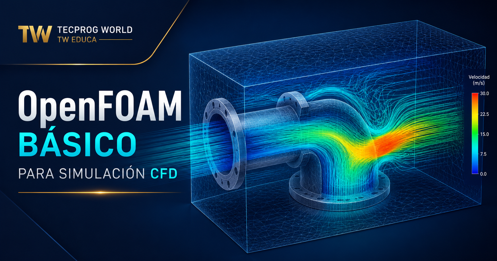

Tecprog World
OpenFOAM básico para simulación CFD | TW Educa
Introducción guiada al flujo de trabajo de OpenFOAM para simulaciones preliminares y casos educativos.

Tecprog World
Introducción guiada al flujo de trabajo de OpenFOAM para simulaciones preliminares y casos educativos.
